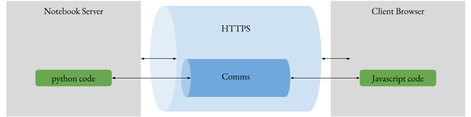

Use the Cookiecutter¶
First step: Create an empty repository¶
would be to create an empty repository on gitlab, or github. Find the big button offering to create a new project and click on it.
Note: Do not provide any Readme or license stuff right now, we want an empty repo, and its url.
Second step: cookiecutter readme¶
go on cookiecutter-ipyreact-widget repository page. According to readme :
pip install cookiecutter
cookiecutter git@gitlab.com:weatherforce-platform/cookiecutter-ipyreact-widget.git
If you do not have access to ssh you will have to use https with the following:
cookiecutter https://gitlab.com/weatherforce-platform/cookiecutter-ipyreact-widget.git
And start filling the provided form. For widget_name use camel case. Eg testWidget
> Note: fill asked url with the repository url.
## Third step: finish project initialisation
Enter your widget folder, and turn it into a repository.
```bash
cd widget_name
git init
git remote add origin <repo-url>
git add .
git commit -m "First commit"
git push
You can then provide a venv and install all the required dependencies.
python3 virtualenv venv
source venv/bin/activate
pip install -r requirements.txt
Finally, you will need to access your code from a notebook. To do so we need to install it. To avoid the hassle of re-installing it every time you make a change on your codebase do :
pip install -e .
then go on js side, install and transpile it on dev mode and go back to parent folder:
cd js
npm install
npm run dev
cd ..
Install js side on dev mode as well using Jupyter part from Readme:
jupyter nbextension install --py --symlink --sys-prefix pythonpackagename
jupyter nbextension enable --py --sys-prefix pythonpackagename
If you do not have root access replace –sys-prefix with –user
There you go ! the interesting parts begins now !
Fourth step: code¶
An ipyreact widget is a compound of a python Widget’s child class, and a notebook extension (which is a javascript piece of code, interacting with jupyter) using React library. To have a communication between those two, Jupyter provides the comm package, which is a communication bridge between front end and back end. Find below a schema to ease comprehension.

Fortunately, you don’t really have to handle the communication part, the Widgets classes on both side are meant to save you the time and trouble. Instead, you can directly focus on creating your widget. To do so you will need to have a good knowledge of React in addition to Javascript and Python.
To create a Widget, my advice is to start directly with the front end, creating all necessary parts, with hard coded state and props, and once it is up and running, you can then start to pass state and props from python side.
let’s dive in!
Development environment¶
Now that everything is set up, we need a way to quickly test what we are developping. to do so, you have to open at least three terminals, one for launching a notebook where you will import your widget, aka the TESTME.ipynb, one to launch the webpack watch server, and finally one to develop.
#first terminal
jupyter notebook TESTME.ipynb
#second terminal
cd js
npm run watch
#third terminal
cd js/src
vim widget.js
then try to edit widget.js, save it, and just hit the F5 (refresh) button focused on your web browser. You will see your changes directly on screen.
Sadly, for python changes, you will need to stop and relaunch jupyter notebook server.
Communication from one end to the other¶
As described earlier, python side and front end communicate through the Comms channels. Comms is a Jupyter package designed by Jupyter team, and it provides communication channels, with ways to open them from both sides.
In our case, the python side is the one that opens the communication. More specifically every instance are providing a target_comm, which is the channel it is opening. So you have to make sure that both sides are talking to the same channel.